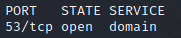
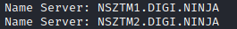
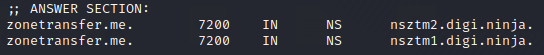
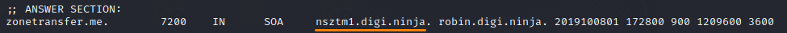
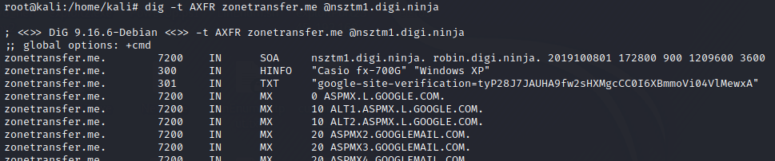
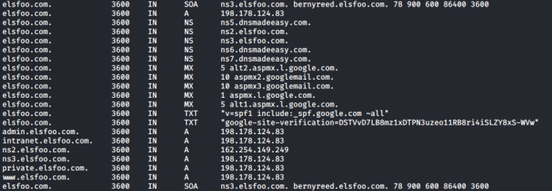
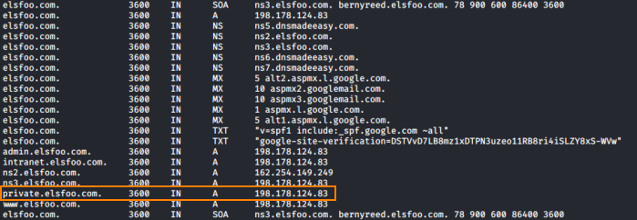

Zone Transfers
Zone Transfers
Zone transfers were designed so that secondary DNS servers could update their records from primary
name servers.
This could be useful in a variety of situations:
◇ If the primary name server goes down, so
that the secondary name server has a complete, up-to-date copy of the zone file
◇ load balance requests
between the primary name server and its secondary name servers
◇ A company that has switched hosting providers
and needs a way to transfer its DNS setup from one name server to another.
DNS zone transfer offers no authentication. So, any client or someone
posing as a client can ask a DNS server for a copy of the entire zone.
This means that unless some kind of
protection is introduced,
anyone is capable of getting a list of all hosts
for the particular domain, which gives them a lot of potential attack vectors.
While most
DNS communications rely on UDP port 53, DNS zone transfers are carried over TCP port 53 because to perform a
transaction such as this DNS requires a more reliable connection.
Many DNS servers block zone transfers from
arbitrary locations on the internet by:
• Allowing only certain addresses (the primary name server)
•
firewall blocking TCP port 53.
Many networks deploy multiple DNS servers for the sake of redundancy or
load balancing. As a result, DNS servers need a way to share information. This “sharing” process occurs through the
use of a
zone transfer. A zone transfer, also commonly referred to as DNS query type
AXFR allows multiple DNS servers to stay in sync.
Zone Transfers should be enabled only
for trusted IP addresses otherwise we can use the misconfiguration of the remote DNS server and enumerate the entire
DNS record(the DNS database) for that zone.
If the DNS server is misconfigured we can use the vulnerability following these steps:
1. discover Name Server for the domain ATTENTION: for smaller organizations the nameserver belongs to a different company,
usually a hosting company. This mean that the nameserver might not be in the scope of the assessment
◇
discover DNS servers on the network with TCP port 53 open
nmap -sS -p53 -n 10.50.96.0/24 #linux
Zone transfers take place on TCP port 53
 ◇ discover Name server of a domain name
whois <domain_name> #domain used: zonetransfer.me

dig -t ns <domain_name> #domain used: zonetransfer.me
 ◇ discover the primary name
server , by requesting SOA record
dig -t soa <domain> #domain used: zonetransfer.me
 *robin.digi.ninja is not
another nameserver, it is the email of the administrator. Yes, because in SOA records the emails miss the ‘@’ sign.
So robin.digi.ninja is equivalent to robin@digi.ninja
2. zone transfer request By
using AXFR record in our query, we can request all records for a zone.
It is always worth checking for zone
transfers on all available Name Servers
◇ Linux ▪
dig If the command does not work add +nocookie, usually
+cookie(default) is added for more security and provide some protection against certain attacks(
here if you want know
more). But cookie can give some problem with some configurations
dig -t AXFR <domain> @<name_server>
 dig syntax: dig -t [record_type] [domain] @[server] ▪
other tools
dnsrecon -d <domain>
fierce -dns <domain>
#nslookup command in modern Linuxes cannot perform a zone transfer
◇ Windows
nslookup
server <name_server>
set q=AXFR
ls –d <domain> #target domain
if the DNS server is misconfigured we will have a screen similar to this one

3. If we have found additional subdomains
 ◇ /etc/hosts
Modify
the /etc/hosts file in our machine to access to the subdomain.
The reason why we get different resources,
even though we are resolving to the same IP address, is due to virtual routing. When the web server sees the IP
address, it serves the default Apache2. When the web server sees a domain name being requested, it serves a
completely different page
Bibliography:
• “Hands on Hacking: Become an Expert at
Next Gen Penetration Testing and Purple Teaming” Matthew Hickey, Jennifer Arcuri
•
https://digi.ninja/projects/zonetransferme.php